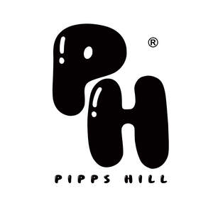

Trade Mark Journal No.2025/030 25 July 2025
UK00004215143 6 June 2025 (3,5,8,11,21,26)

- Class 3
- Shower gels; Bath and shower gels; Lip makeup; Skin make-up; Make-up removers; Make-up primers; Eye makeup remover; Make-up powder; Make-up pencils; Make-up for the face; Eye make-up; Make-up foundations; Make-up palettes containing cosmetics; Make-up preparations; Skincare cosmetics; Make-up preparations for the face and body; Eyeliner; Lip cosmetics; Lipstick; Skin cleansers [cosmetic]; Beauty care cosmetics,Hair shampoos, Hair Dyes; Hair colour removers; Make-up remover; Hair creams; Hair bleach; Hair conditioners; Hair lighteners; Hair serums; Creams for fixing hair; Hair conditioner; Hair lotion; Hair cream; Hair removing cream; Hair spray; Hair wax; Hair gel; Nail-polish removers; Hair mascara; Nail polish; Nail polish top coat; Nail varnish; Nail glitter; Nail makeup; Nail gel; Cosmetic nail care preparations; Blush pencils; Face blusher; Eyeshadow; Lip glosses; Concealers; Lip balm; Lip liners; Eyebrow pencils; Facial makeup; Loose face powder; Skin cream; Skin moisturizers used as cosmetics.
- Class 5
- Nail fungus treatment preparations.
- Class 8
- Electric and non-electric depilatory appliances; Electric shavers; Razors, electric or non-electric; Nail scissors; Nail files; Fingernail clippers; Cuticle tweezers.
- Class 11
- Hair driers; Electrical hair driers; Nail lamps.
- Class 21
- Mascara brushes; Eyeliner brushes; Nail brushes; Eyebrow brushes; Cosmetics brushes.
- Class 26
- Hair rollers (Non-electric -); Electric hair rollers; Hair curlers.
rizwan mahmood